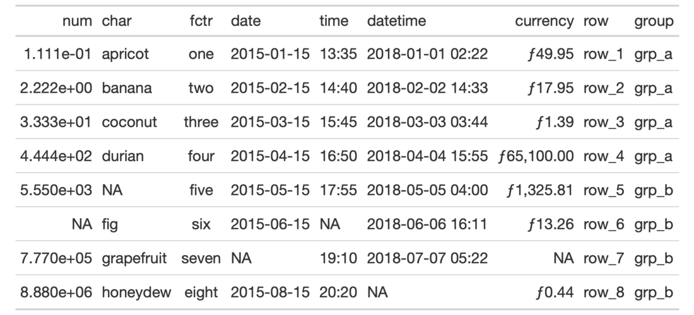

| currency {gt} | R Documentation |
fmt_currency()The currency() helper function makes it easy to specify a context-aware
currency symbol to currency argument of fmt_currency(). Since gt can
render tables to several output formats, currency() allows for different
variations of the custom symbol based on the output context (which are
html, latex, rtf, and default). The number of decimal places for
the custom currency defaults to 2, however, a value set for the decimals
argument of fmt_currency() will take precedence.
currency(..., .list = list2(...))
... |
One or more named arguments using output contexts as the names and currency symbol text as the values. |
.list |
Allows for the use of a list as an input alternative to |
We can use any combination of html, latex, rtf, and default as named
arguments for the currency text in each of the namesake contexts. The
default value is used as a fallback when there doesn't exist a dedicated
currency text value for a particular output context (e.g., when a table is
rendered as HTML and we use currency(latex = "LTC", default = "ltc"), the
currency symbol will be "ltc". For convenience, if we provide only a single
string without a name, it will be taken as the default (i.e.,
currency("ltc") is equivalent to currency(default = "ltc")). However, if
we were to specify currency strings for multiple output contexts, names are
required each and every context.
A list object of class gt_currency.

7-18
Other Helper Functions:
adjust_luminance(),
cell_borders(),
cell_fill(),
cell_text(),
cells_body(),
cells_column_labels(),
cells_column_spanners(),
cells_footnotes(),
cells_grand_summary(),
cells_row_groups(),
cells_source_notes(),
cells_stub_grand_summary(),
cells_stub_summary(),
cells_stubhead(),
cells_stub(),
cells_summary(),
cells_title(),
default_fonts(),
escape_latex(),
google_font(),
gt_latex_dependencies(),
html(),
md(),
pct(),
px(),
random_id()
# Use `exibble` to create a gt table;
# format the `currency` column to have
# currency values in guilder (a defunct
# Dutch currency)
tab_1 <-
exibble %>%
gt() %>%
fmt_currency(
columns = currency,
currency = currency(
html = "ƒ",
default = "f"),
decimals = 2
)